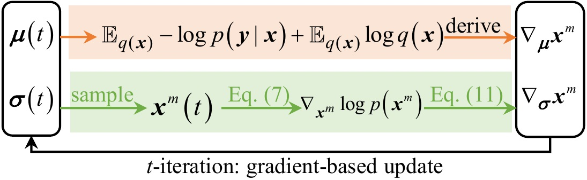

Represent
Construct a learnable Gaussian-mixture variational posterior over the clean image and a hierarchical posterior over real-world noise.
ScoreDVI+ · Extended journal manuscript
A general variational inference framework that obtains implicit image priors from MMSE Gaussian denoisers for real-world denoising and image restoration.
School of Artificial Intelligence and Automation · Huazhong University of Science and Technology
Real-world image denoising is practical and crucial in low-level computer vision. Recent score-based generative models have shown effectiveness and promise in zero-shot image restoration. However, applying existing score-based restoration methods requires training explicit score networks on real-world images, and these methods are usually confined to predefined generation-oriented procedures, making them inefficient and inflexible. Moreover, existing methods generally assume white Gaussian noise and cannot handle real-world cases. To address these problems, this paper presents an implicit score priors-guided variational inference framework for flexible and effective real-world denoising.
The variational inference framework does not require an explicit image-prior density. Instead, we guide its optimization using implicit score priors obtained from samples of denoising variational Gaussian posteriors and readily available minimum mean squared error (MMSE) Gaussian denoisers. The proposed optimization uses implicit scores as regularization and supports adaptive inference without an explicit score network or a predefined sampling procedure.
Meanwhile, a non-i.i.d. Gaussian mixture likelihood model and hierarchical Bayesian inference dynamically model real-world noise during optimization. A score refinement strategy and a noise-aware prior assignment scheme further improve stability and performance. The framework is also extended to general image restoration, including linear and non-linear restoration tasks. Extensive experiments across diverse tasks and datasets demonstrate its effectiveness and generality.
Implicit score priors
Instead of learning an explicit score model, we query an MMSE Gaussian denoiser along the variational trajectory and use the resulting implicit score to optimize the posterior.

Construct a learnable Gaussian-mixture variational posterior over the clean image and a hierarchical posterior over real-world noise.
Sample the current posterior and pass samples through MMSE Gaussian denoisers to extract image scores implicitly.
Use refined scores as regularization, then jointly optimize image and noise posteriors with noise-aware prior assignment.
Key components
A general VI paradigm driven by scores derived from off-the-shelf MMSE Gaussian denoisers.
A non-i.i.d. GMM likelihood and hierarchical Bayesian inference adapt to structured, signal-dependent noise.
Score refinement and noise-aware prior assignment improve robustness without constraining the restoration procedure.
The same framework handles linear and non-linear restoration, including blur, missing pixels, HDR, and JPEG artifacts.
Qualitative and quantitative evaluation
We evaluate ScoreDVI+ on real-world denoising and on linear and non-linear image restoration problems.
Photography images, fluorescence microscopy images, and low-dose CT images.
Zero-shot benchmark
ScoreDVI+ works from one noisy image and reaches the strongest average PSNR among the compared zero-shot methods across five real-world benchmarks.
Image deblurring and inpainting with known forward operators.
Restoration under HDR clipping and JPEG compression.
We propose ScoreDVI+, a variational inference method that uses implicit score priors from MMSE Gaussian denoisers for variational optimization and incorporates a non-i.i.d. Gaussian mixture likelihood for real-world image denoising. Score refinement and noise-aware prior assignment improve optimization stability and denoising performance. The score-based variational inference framework is further extended to linear and non-linear restoration tasks, including image deblurring, inpainting, HDR, and JPEG restoration. Across diverse tasks and benchmark datasets, ScoreDVI+ generally outperforms other zero-shot and dataset-based restoration methods.
Limitations. ScoreDVI+ requires approximately 20 seconds to process a single noisy image and is therefore not yet suitable for real-time applications. For real-world degradations beyond noise, it also requires an accurate system matrix or forward operator. Future work will focus on computational efficiency and blind or semi-blind restoration, where the forward model is partially known or learned jointly with the image.